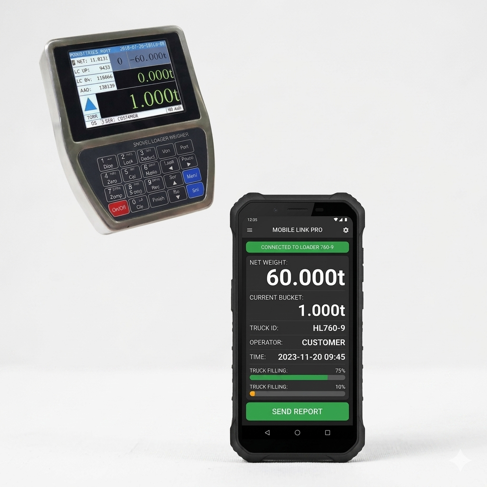

LOADER SCALES FOR CONSTRUCTION CONTRACTORS
Aggregate & Fill Material Tracking
Monitor sand, gravel, crushed rock, and fill material loads across your construction sites. Automated load recording ensures accurate material accounting and client invoicing.
Construction Benefits:
- Accurate material quantity verification
- Client-facing load receipts printed on-site
- Real-time load tracking across multiple projects
- Automated daily reports for site managers

Multi-Site Project Management
Manage material tracking across multiple construction projects simultaneously. Web dashboard gives project managers real-time visibility of loads being delivered to each site.
Project Features:
- Web-based dashboard for project oversight
- Track loads by project and client
- Automated billing documentation
- Equipment portable between sites

Earthmoving & Contractor Solutions
Purpose-built for earthmoving contractors who move material between sites. Load once, weigh, then transport with confidence that you have accurate weights for all delivery locations.
Contractor Advantages:
- Rugged design for daily site use
- Simple Android app for operators
- Portable printer for instant receipts
- Compatible with older loader models
Complete System: $1,500 + GST